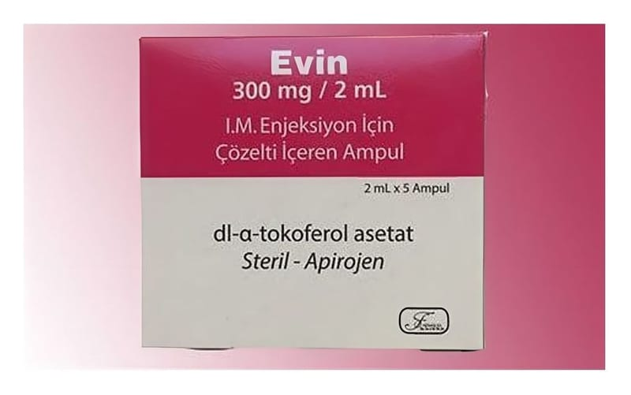

Evin 300 mg/2 ml I.M. Enjeksiyon İçin Çözelti İçeren Ampul, Ampul, 5 Adet

Ne için kullanılır
KT · Bölüm 1EVİN uçuk sarımsı renkli, berrak, yağlı çözelti şeklinde, amber renkli ampullerde sunulmaktadır. EVİN, yağda çözünen bir vitamin olup, hücre bütünlüğünü korur ve güçlü bir antioksidan özelliğine sahiptir. EVİN, E vitamini eksikliği ve yetersizliğine bağlı gelişen durumlarda kullanılır.